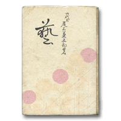

音羽屋をより深く知るための本
音羽屋をより深く知るための本 > 『藝』
六代目尾上菊五郎『藝』
（改造社 1947年）六代目自らが藝について語る
六代目菊五郎の『藝』は、「六代目の襲名」「市村座行進曲」「演出口傳小話」を中心に構成されています。
「六代目の襲名」では、五代目が亡くなった直後、九代目市川團十郎の口上を得て、弱冠十九歳で襲名した話からはじまります。襲名狂言の「曽我の對面」では、團十郎が初役で工藤祐経を勤めるとともに「今の言葉でいう舞台監督をしてくれた」とあります。その時の教えを克明に書き残しているところから見ても、六代目は五代目の息子であるとともに、團十郎の藝を尊敬し、その後継者たろうとしていたことがよくわかります。記述は、それぞれの役の鬘、拵え、小道具にはじまり、演技のその手順に及びます。
「市村座行進曲」は、初代中村吉右衛門とともに一時代を築いた二長町時代の思い出です。「親にもまさる團十郎の教訓」を受けたにもかかわらず、五代目も團十郎もこの世を去って「木から落ちた猿同然」となった劇界を盛り上げるために、いかに奮闘したかが語られています。市村座の興行主は、将軍とまでのちにいわれた田村成義です。先輩たちによって頭がつかえていた歌舞伎座を離れ、当時、若手だった六代目らに大役を演じる機会を与えました。その手始めは『忠臣蔵』と『戻駕』でしたが、この章でも「五段目の勘平」「大星由良之助」と、古典の大役について分量を割いています。
「演出口傳小話」では、「市村座行進曲」にもれた代表的な演目、『伽羅先代萩』の仁木弾正や『道成寺』の白拍子花子、『髪結新三』の新三などを網羅しています。『道成寺』について、どこがむずかしいかといえば「鞨鼓の件」をあげ、ただ叩いているだけでは、飴屋も同じ事になってしまうとし、「一つの曲として完全に間を打ち込みながら踊ること」をあげています。小道具をあしらうのではなく、すべてに完璧を求めていく六代目の姿勢がよく伝わってくる芸談です。
また、かかわった新作の上演年表からは、新たな古典を生み出した六代目の意欲的な姿勢がよくわかります。
六代目菊五郎の代表的な著作として、他に『おどり』（時代社 1948年）があります。『おどり』は、九藝出版から出た『日本の芸談 第四巻』に収録されています。
Copyright © Otowaya All Rights Reserved.